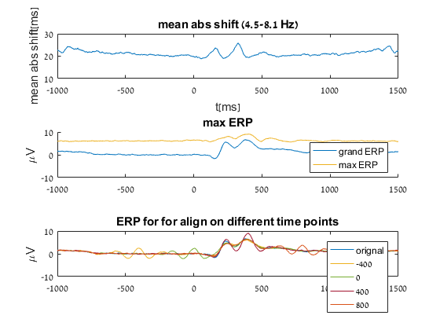

ERPfigure
subplot(3,1,1)
varplot(times,abs(shift))
xlabel t[ms]
title 'mean abs shift (4.5-8.1 Hz)'
subplot(3,1,2)
max_p3=zeros(size(times));
for ii = 1:length(times)
max_p3(ii) = max(mean(squeeze(align_trials_by_shift(norm_trials, get_phase_shift(squeeze(total_phases), ii, 8:13, freqs, SamplingInterval))),2));
end
hold on
varplot(times,squeeze(norm_trials))
plot(times,max_p3)
legend({'grand ERP','max ERP'})
title 'max ERP'
subplot(3,1,3);
varplot(times,squeeze(norm_trials))
hold on
for ii = -400:400:800
varplot(times,squeeze(align_trials_by_shift(norm_trials, get_phase_shift(squeeze(total_phases), find(times>ii,1), 8:13, freqs, SamplingInterval))))
end
legend(['orignal', string(-400:400:800)])
title 'ERP for for align on different time points'
subplot(3,1,1)
ylabel 'mean abs shift[ms]'
subplot(3,1,2)
ylabel '\muV'
subplot(3,1,3)
ylabel '\muV'
Warning: to get the extra image functions you need the figextras function on
your path
ans =
Figure (1) with properties:
Number: 1
Name: ''
Color: [0.9400 0.9400 0.9400]
Position: [680 558 560 420]
Units: 'pixels'
Use GET to show all properties
